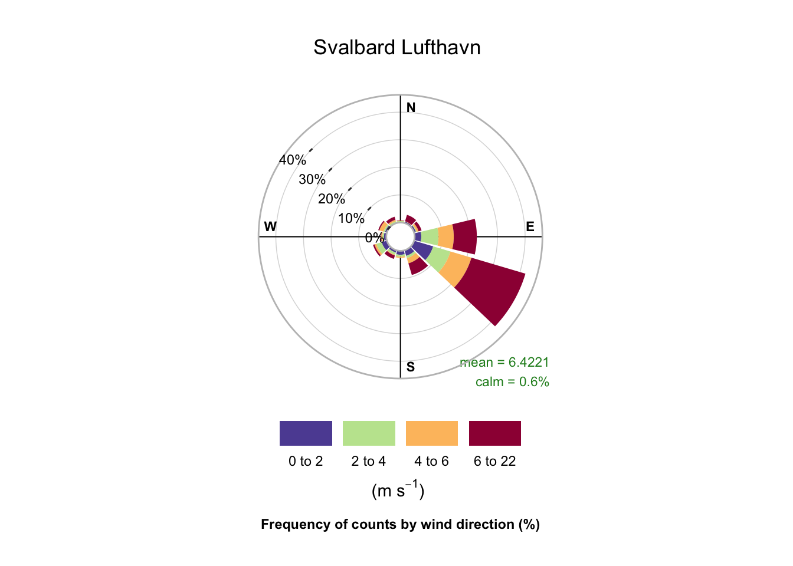
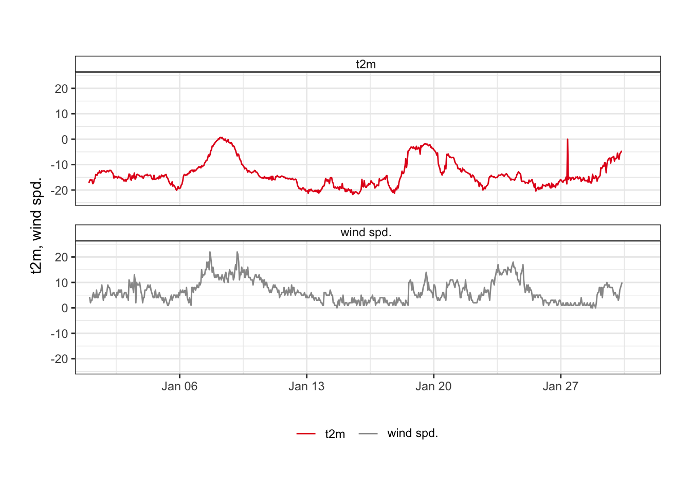
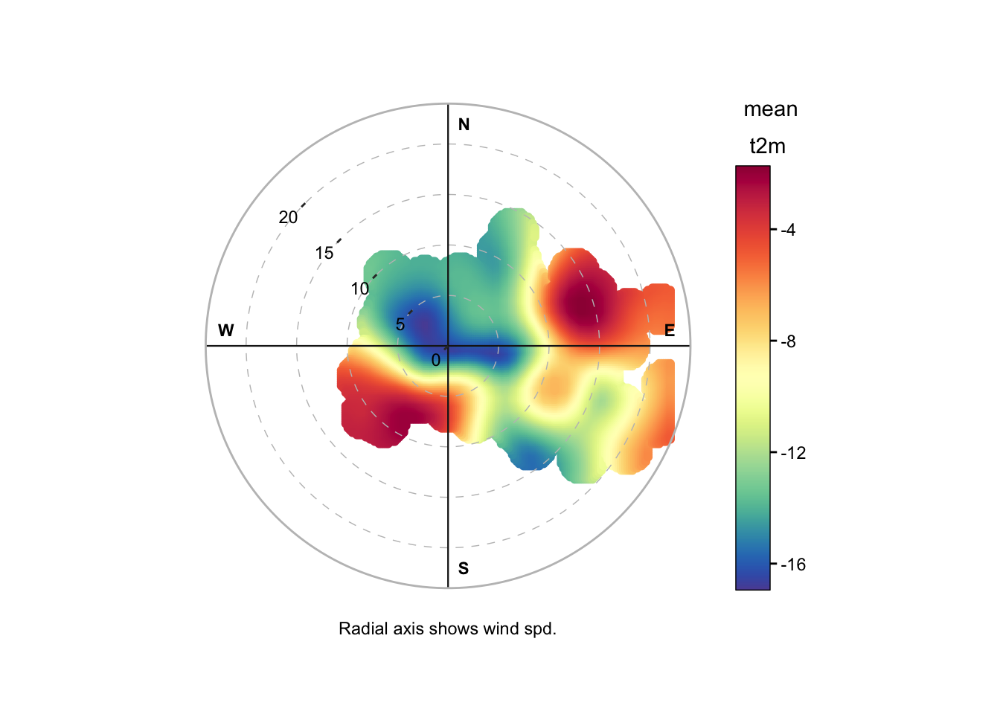
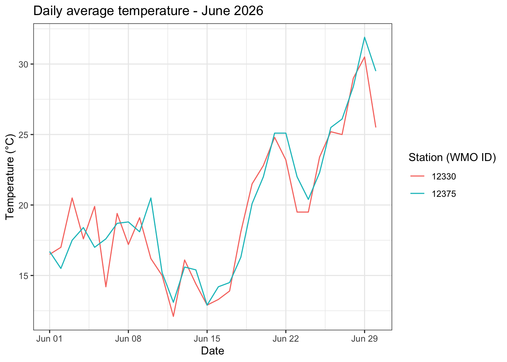
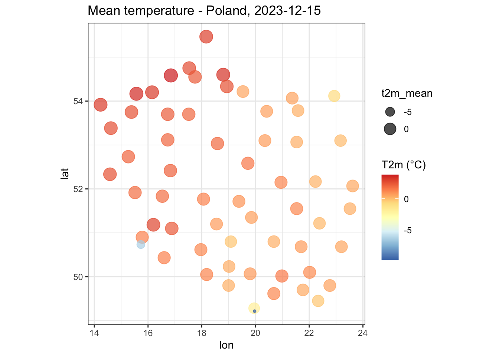

Most of meteorological stations working under the umbrella of the World Meteorlogical Organization (WMO) report their observations in the SYNOP format. The climate package provides a convenient interface to download and decode SYNOP messages from the Ogimet database, which aggregates data from thousands of stations worldwide. Therefore, it is often the most preferable source of meteorological information being a valuable resource for researchers, students, and weather enthusiasts looking to access historical and real-time meteorological data for analysis, visualization, and educational purposes. This information is most often used as a complementary source to national meteorological services that is delivered free of charge and without any API key requirements.
The meteo_ogimet() function is the unified entry point
for downloading data from Ogimet.
It uses two backends (automatically) selected by the
interval argument:
interval = "hourly" → SYNOP
backend (default): downloads and decodes raw SYNOP messages via
the Ogimet getsynop endpoint. Returns clean units used in
meteorology (ws in m/s, wd in degrees,
t2m in °C, POSIXct date in UTC).interval = "daily" → HTML
backend (default): scrapes pre-formatted daily summary tables
generated in the Ogimet web service.Use source = "synop" or source = "html" to
override the default for any interval.
Download a full year of hourly observations and visualize wind patterns and temperature advection using the openair package.
With the SYNOP backend the output already contains:
ws — wind speed in m/s
wd — wind direction in degrees (no
character-to-degrees conversion needed)t2m — air temperature in °Cdate — POSIXct timestamp in UTC (the column name
openair expects)
library(climate)
# Download hourly data for Svalbard Lufthavn (WMO 01008)
df = meteo_ogimet(interval = "hourly",
date = c("2020-01-01", "2020-01-31"),
station = "01008")
head(df[, c("date", "station", "t2m", "ws", "wd")])## station: 01008
## http://www.ogimet.com/cgi-bin/getsynop?block=01008&begin=202001010000&end=202001312359
## Downloaded 712 SYNOP messages for: 01008
## date station t2m ws wd
## 1 2020-01-01 00:00:00 01008 -17.2 4 100
## 2 2020-01-01 01:00:00 01008 -16.2 4 110
## 3 2020-01-01 02:00:00 01008 -15.9 2 100
## 4 2020-01-01 03:00:00 01008 -16.3 3 120
## 5 2020-01-01 04:00:00 01008 -16.0 3 100
## 6 2020-01-01 05:00:00 01008 -17.5 5 100
library(openair)
# Wind rose by season — no unit conversion needed
windRose(mydata = df,
ws = "ws",
wd = "wd",
paddle = FALSE,
title = "Svalbard Lufthavn")

# Which wind sectors bring warm / cold air masses?
polarPlot(df,
pollutant = "t2m",
x = "ws",
wd = "wd",
k = 50,
force.positive = FALSE,
resolution = "fine",
normalise = FALSE)
The HTML backend (interval = "daily") returns
pre-aggregated daily statistics (Tmax, Tmin, Tavg, precipitation, etc.)
for one or more stations.
library(climate)
# Daily summaries for two Polish stations: Poznan (12330) and Warsaw (12375)
daily = meteo_ogimet(interval = "daily",
date = c("2026-06-01", "2026-06-30"),
station = c(12330, 12375))
head(daily)## Daily raports will be generated for 6 UTC each day. Use the >>hour<< argument to change it
## station: 12330
## INFO: Please note that the Ogimet has recently limited number of queries that are accepted
## by the server from a single IP address. Therefore, downloading more than 1 month of data
## for a single station requires 20 seconds pause between subsequent queries and
## may take a while. Thank you for your patience.
## station: 12375
##
## Date Lon Lat Alt Temperature_Max Temperature_Min
## <Date> <char> <char> <char> <char> <char>
## 1: 2026-06-30 16.8344 52.4167 88 32.7 18.9
## 2: 2026-06-30 20.9608 52.1628 107 36 20.7
## 3: 2026-06-29 16.8344 52.4167 88 38.9 21.6
## 4: 2026-06-29 20.9608 52.1628 107 38.1 24.7
## 5: 2026-06-28 16.8344 52.4167 88 35.8 21.5
## 6: 2026-06-28 20.9608 52.1628 107 34.7 20.4
## Temperature_Avg TdAvg Hr.Avg App.TAvg Wind_Dir. Wind_Int. Wind_Gust
## <char> <char> <char> <char> <char> <char> <char>
## 1: 25.5 17.7 64.7 24.8 NNW 16.8 43.2
## 2: 29.5 16.5 49.2 28.3 N 16.7 <NA>
## 3: 30.5 17.7 50.9 30.9 W 11.6 43.2
## 4: 31.9 16.5 41.2 32.8 SW 6.9 36
## 5: 29 15.1 46.8 29.3 SSE 8 <NA>
## 6: 28.4 13.6 42.7 28.4 SE 6.5 <NA>
## Pres.s.lev Precmm SunD.1 SnowDep TotClOct lowClOct VisKm station_ID Prec.
## <char> <char> <char> <char> <char> <char> <char> <char> <char>
## 1: 1021.3 <NA> <NA> <NA> 5.6 3.3 43.1 12330 0.2
## 2: 1018.6 <NA> <NA> <NA> 4.2 0.8 44.4 12375 0.9
## 3: 1016.2 <NA> <NA> <NA> 4.6 1.2 32.5 12330 0.0
## 4: 1015.9 <NA> <NA> <NA> 2.5 0.7 37 12375 0.0
## 5: 1017.4 <NA> <NA> <NA> 2.7 0.2 38.8 12330 0.0
## 6: 1019 <NA> <NA> <NA> 1.5 0 37.1 12375 0.0
## SunD-1
## <char>
## 1: 10.1
## 2: 14.7
## 3: 13.4
## 4: 15.0
## 5: 15.5
## 6: 15.5
library(ggplot2)
daily$Temperature_Avg = as.numeric(daily$Temperature_Avg)
# Compare average temperatures between the two stations
ggplot(daily, aes(x = as.Date(Date), y = Temperature_Avg,
colour = factor(station_ID), group = station_ID)) +
geom_line() +
labs(title = "Daily average temperature - June 2026",
x = "Date",
y = "Temperature (°C)",
colour = "Station (WMO ID)") +
theme_bw()
The SYNOP backend supports downloading all Ogimet stations for an
entire country in a single request via the country_name
argument. This is useful for spatial analysis.
library(climate)
# All stations in Poland for a single day
poland = meteo_ogimet(interval = "hourly",
country_name = "Poland",
date = c("2023-12-15", "2023-12-15"))
cat("Stations:", length(unique(poland$station)), "\n")
cat("Observations:", nrow(poland), "\n")
head(poland[, c("date", "station", "t2m", "ws", "slp")])## Downloading country: Poland
## http://www.ogimet.com/cgi-bin/getsynop?begin=202312150000&end=202312152359&state=Poland
## Downloaded 1438 SYNOP messages for: Poland
## Stations: 61
## Observations: 1438
## date station t2m ws slp
## 1 2023-12-15 00:00:00 12001 0.9 8 1022.0
## 2 2023-12-15 06:00:00 12001 2.5 10 1022.3
## 3 2023-12-15 12:00:00 12001 3.6 8 1024.5
## 4 2023-12-15 18:00:00 12001 5.0 14 1025.2
## 5 2023-12-15 00:00:00 12100 1.5 1 1023.8
## 6 2023-12-15 01:00:00 12100 2.1 2 1024.7
# Quick spatial overview — requires coordinates from stations_ogimet()
library(dplyr)
station_meta = stations_ogimet(country = "Poland")
# Join decoded observations with coordinates
poland_geo = poland %>%
group_by(station) %>%
summarise(t2m_mean = mean(t2m, na.rm = TRUE), .groups = "drop") %>%
left_join(station_meta, by = c("station" = "wmo_id"))
ggplot(poland_geo, aes(x = lon, y = lat, colour = t2m_mean, size = t2m_mean)) +
geom_point(alpha = 0.7) +
scale_colour_distiller(palette = "RdYlBu", direction = -1, name = "T2m (°C)") +
coord_quickmap() +
labs(title = "Mean temperature - Poland, 2023-12-15") +
theme_bw() +
theme(legend.position = "right")
return_list
Setting return_list = TRUE returns a named list with two
data frames: $data (the compact 20-column simplified view)
and $full (the complete parser output with 30+ columns
including cloud types, precipitation period, snow state, etc.).
library(climate)
result = meteo_ogimet(interval = "hourly",
station = 12330,
date = c("2023-06-01", "2023-06-03"),
return_list = TRUE)
# Compact view
names(result$data)
# Full parser output
names(result$full)
# Variables only available in the full output
result$full[1:5, c("low_cloud_type", "middle_cloud_type", "high_cloud_type",
"precipitation_time", "snow_depth_state", "source")]## station: 12330
## http://www.ogimet.com/cgi-bin/getsynop?block=12330&begin=202306010000&end=202306032359
## Downloaded 72 SYNOP messages for: 12330
## [1] "date" "station" "t2m" "dpt2m" "rel_hum"
## [6] "tmax" "tmin" "wd" "ws" "gust"
## [11] "press" "slp" "press_tend" "precip" "Nt"
## [16] "Nh" "N_base" "insol" "visibility" "snow"
## [1] "station_id" "Date" "station_type"
## [4] "region" "obs_day" "obs_hour"
## [7] "wind_unit" "wind_estimated" "visibility"
## [10] "cloud_cover" "wind_direction" "wind_speed"
## [13] "air_temperature" "dewpoint_temperature" "station_pressure"
## [16] "sea_level_pressure" "pressure_tendency" "pressure_change"
## [19] "precipitation_amount" "precipitation_time" "cloud_base_min"
## [22] "cloud_base_max" "low_cloud_type" "middle_cloud_type"
## [25] "high_cloud_type" "low_cloud_amount" "maximum_temperature"
## [28] "minimum_temperature" "gust" "cloudiness_height"
## [31] "sunshine_duration" "snow_depth" "snow_depth_state"
## [34] "source"
## low_cloud_type middle_cloud_type high_cloud_type precipitation_time
## 1 0 0 1 12
## 2 0 0 1 NA
## 3 0 0 1 NA
## 4 0 0 4 NA
## 5 0 0 1 NA
## snow_depth_state
## 1 NA
## 2 NA
## 3 NA
## 4 NA
## 5 NA
## source
## 1 AAXX 01001 12330 12982 12101 10119 20060 30074 40182 57008 60001 80001==
## 2 AAXX 01011 12330 42982 22201 10124 20064 30072 40179 58006 80001==
## 3 AAXX 01021 12330 42982 22101 10113 20064 30067 40175 57011 80001==
## 4 AAXX 01031 12330 42981 62601 10101 20059 30066 40174 57008 80004==
## 5 AAXX 01041 12330 42981 50000 10133 20069 30065 40172 56007 80001==Override the automatic backend selection with the source
argument:
library(climate)
# Force HTML backend for hourly data
poznan_html = meteo_ogimet(interval = "hourly",
station = 12330,
date = c("2023-06-01", "2023-06-03"),
source = "html", # or synop
precip_split = TRUE)
head(poznan_html)## station: 12330
## INFO: Please note that the Ogimet has recently limited number of queries that are accepted
## by the server from a single IP address. Therefore, downloading more than approx. 1 day of data
## for a single station requires 20 seconds pause between subsequent queries and
## may take a while. Thank you for your patience.
## station_ID Lon Lat Date T Td Tmax Tmin
## <num> <num> <num> <POSc> <char> <char> <char> <char>
## 1: 12330 16.8344 52.4167 2023-06-03 06:00:00 10.3 1.9 16.1 5.4
## 2: 12330 16.8344 52.4167 2023-06-03 05:00:00 8.9 2.7 <NA> <NA>
## 3: 12330 16.8344 52.4167 2023-06-03 04:00:00 7.1 2.6 <NA> <NA>
## 4: 12330 16.8344 52.4167 2023-06-03 03:00:00 5.7 1.6 <NA> <NA>
## 5: 12330 16.8344 52.4167 2023-06-03 02:00:00 5.6 1.1 <NA> <NA>
## 6: 12330 16.8344 52.4167 2023-06-03 01:00:00 6.9 1 <NA> <NA>
## ddd ffkmh Gustkmh P0hPa P.seahPa PTnd Prec Nt Nh HKm
## <char> <char> <char> <char> <char> <char> <char> <char> <char> <char>
## 1: E 18 <NA> 1014.9 <NA> 0.5 0.0/12h 0 - <NA>
## 2: E 14.4 <NA> 1014.8 <NA> 0.8 <NA> 0 - <NA>
## 3: ENE 14.4 <NA> 1014.7 <NA> 1.1 <NA> 0 - <NA>
## 4: ENE 7.2 <NA> 1014.4 <NA> 1 <NA> 0 - <NA>
## 5: ENE 7.2 <NA> 1014 <NA> 1 <NA> 0 - <NA>
## 6: E 14.4 <NA> 1013.6 <NA> 0.9 <NA> 0 - <NA>
## InsoD.1 Viskm Snowcm WW W1 W2 Hr Ta Gustmax P seahPa
## <char> <char> <char> <char> <char> <char> <num> <num> <char> <num>
## 1: <NA> 50 <NA> <NA> <NA> <NA> 56 5.1 <NA> 1025.8
## 2: <NA> 50 <NA> <NA> <NA> <NA> 65 4.5 <NA> 1025.7
## 3: <NA> 50 <NA> <NA> <NA> <NA> 73 2.7 <NA> 1025.7
## 4: <NA> 50 <NA> <NA> <NA> <NA> 75 2.6 <NA> 1025.5
## 5: <NA> 50 <NA> <NA> <NA> <NA> 73 2.4 <NA> 1025.1
## 6: <NA> 50 <NA> <NA> <NA> <NA> 66 2.3 <NA> 1024.6
## InsoD-1 pr6 pr12 pr24
## <char> <num> <num> <num>
## 1: 10.6 NA 0 NA
## 2: <NA> NA NA NA
## 3: <NA> NA NA NA
## 4: <NA> NA NA NA
## 5: <NA> NA NA NA
## 6: <NA> NA NA NA